C语言
基础内容
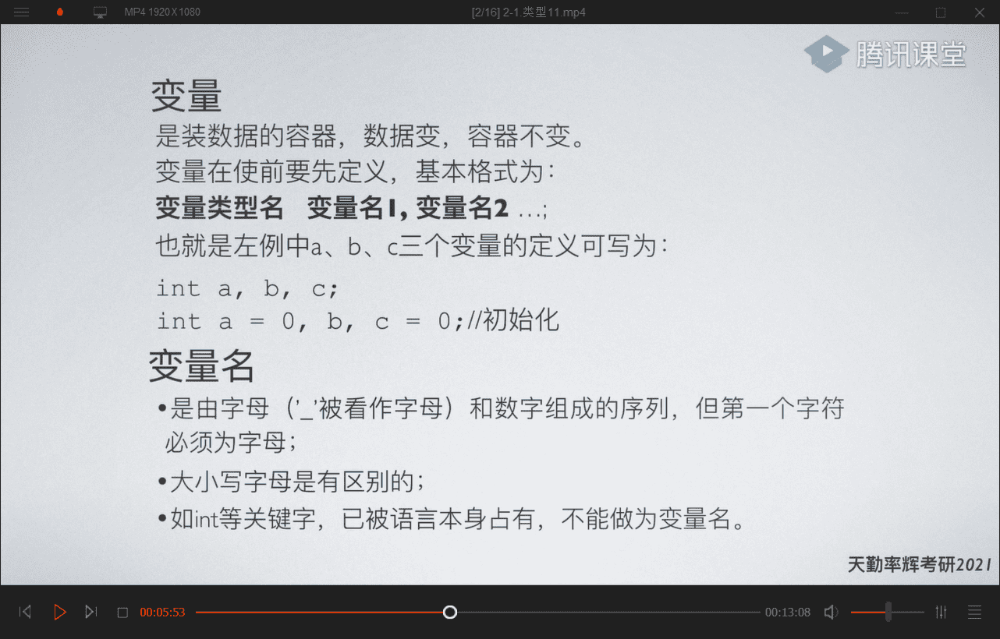
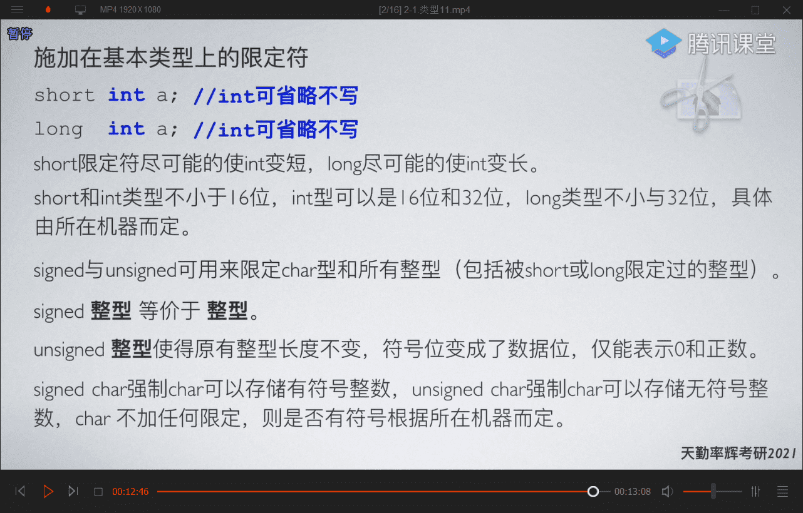
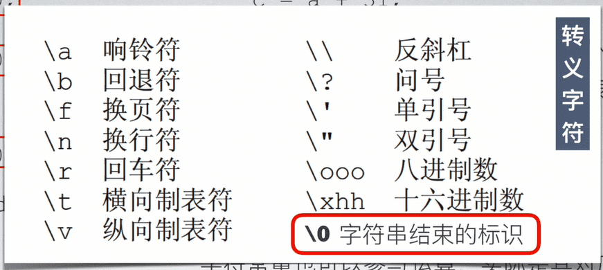
进制
0开头表示八进制
0x开头表示十六进制
++/—用法
++/—用法相同
x++ 先返回x的值，然后自增
++x 先自增，然后返回x的值
x>y ? ‘a’ : ‘b’
x>y ? ‘a’ : ‘b’ 如果x>y,那么返回a,否则返回b
循环
while循环
while(表达式)
{
语句块
break;(结束整个循环)
continue;(跳过当前循环)
}
for循环
for(表达式1；表达式2(循环判断条件)；表达式3)
{
语句块
}
do-while循环
do
{
语句块
}while(表达式判断循环是否继续)
函数的格式
返回值类型 函数名（参数列表）
{
声明和语句；
return x;
}
作用域
内部作用域的赋值可以影响到外部作用域
而定义不可以
static静态变量
static静态变量
{
{
static int i=0;
}
}
等同于把局部变量i 改为全局变量
递归
双递归
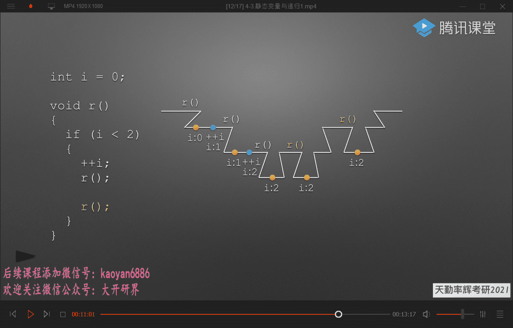
指针与数组
指针
指针是保存地址的一种变量
int a=10;
&a; (表示a的地址)
int a=&a; (表示定义了一个int类型，名为a的指针。)（使用定义指针）
++（*a_）;（表示使用指针指向a，使a自增）
不能只定义空指针，不赋值，即
int p; (这是错误的）
定义空指针的方法
int p = NULL;
数组
整数型数组
int a[10]={1,2,3,4,5,6,7,8,9,10};
int *p =a ; 代表把数组a的第一个元素的地址定义为P
字符型数组
char s1[] =“hello word”字符长度为10+2 2代表/0，系统为字符串自动添加的
指针型数组
一维数组
当以数组名带入函数时，数组名表示该数组第一个元素的指针
二维数组
int b[i][j]={},i表示行，j表示列
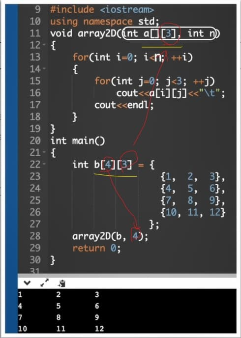
字符型数组
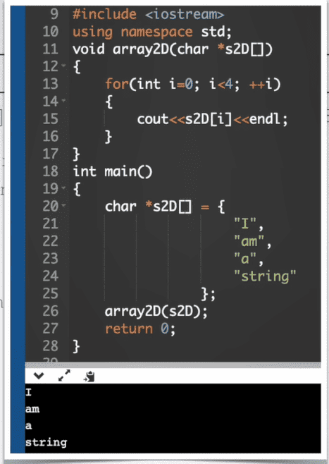
指向函数的指针
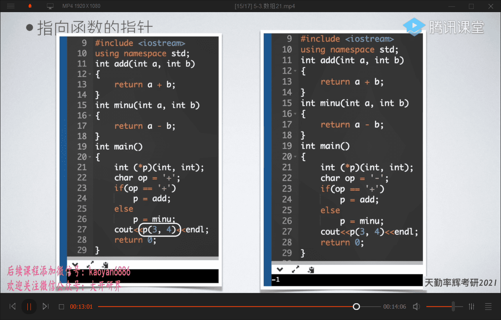
结构体和类
结构体
类型定义
typedef用来给数据类型取新的名字
ey： typedef(空格)int(空格)MYINT
意为：把Int重新命名为MYINT
结构体定义坐标
before:
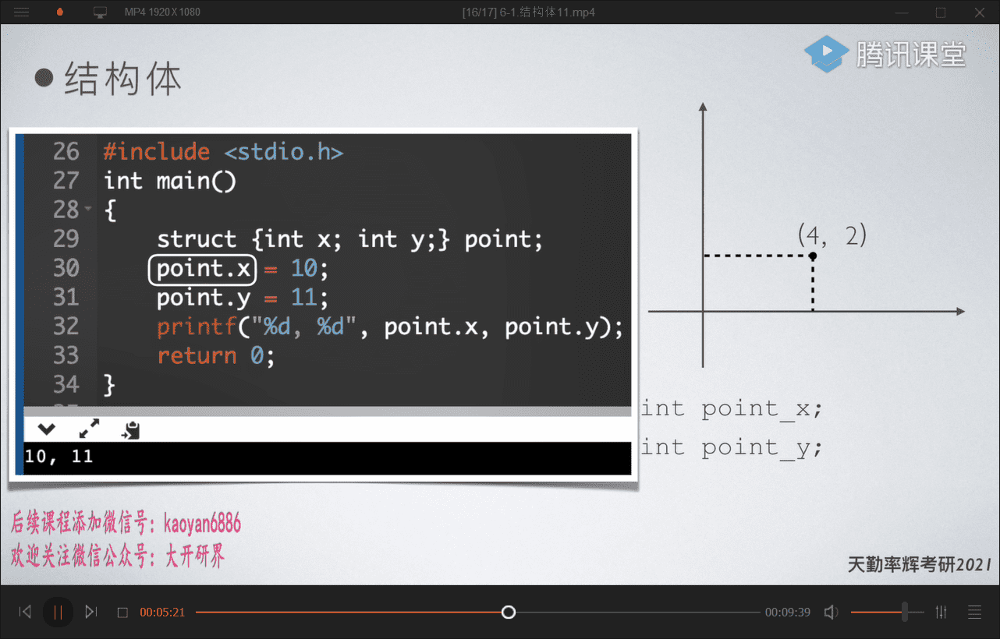
after：
(1)

(2)
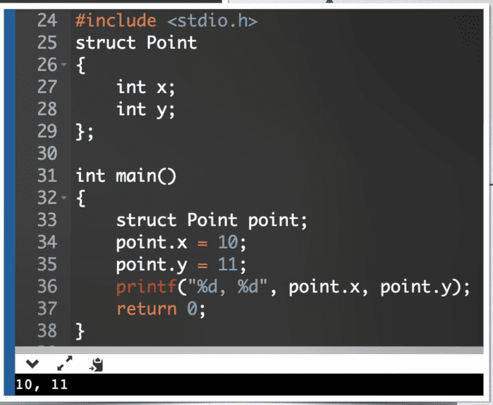
指向结构体的指针
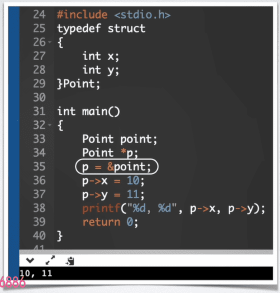
自引用结构
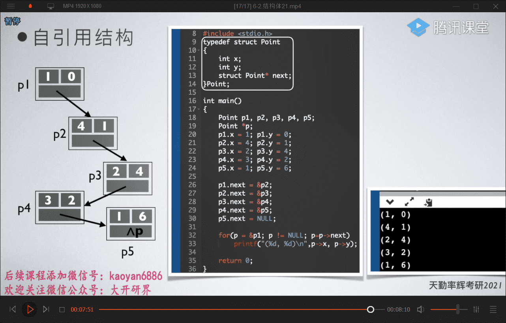